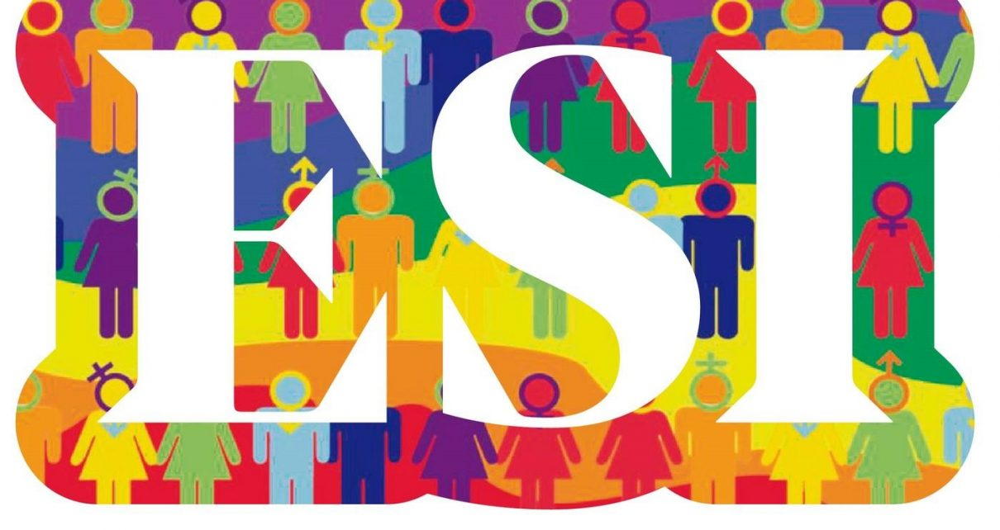

El Día Internacional de la Mujer, se celebra el día 8 de marzo y está reconocido por las Naciones Unidas. En este día se conmemora la lucha de la mujer por su participación, en pie de igualdad con el hombre, en la sociedad y en su desarrollo integro como persona.
La EDUCACIÓN SEXUAL INTEGRAL es un derecho de los niños, niñas y adolescentes de todas las escuelas del país públicas de gestión estatal y privadas, confesionales y laicas. Su aplicación abarca desde el nivel inicial hasta el nivel superior de formación docente y de educación técnica no universitaria. Incorporar la educación sexual integral dentro de las propuestas educativas orientadas a la formación armónica, equilibrada y permanente de las personas. Asegurar la transmisión de conocimientos pertinentes, precisos, confiables y actualizados sobre los distintos aspectos involucrados en la educación sexual integral.
El 4 de octubre de 2006 en Argentina se sancionó la Ley 26150, instaurando el derecho de quienes estudian en cualquiera de los niveles y modalidades educativos a recibir Educación Sexual Integral con el fin de asegurar la transmisión de conocimientos pertinentes, precisos, confiables y actualizados en torno a la sexualidad, promover actitudes responsables ante la misma procurando igualdad de trato y oportunidades sin distinción de géneros.